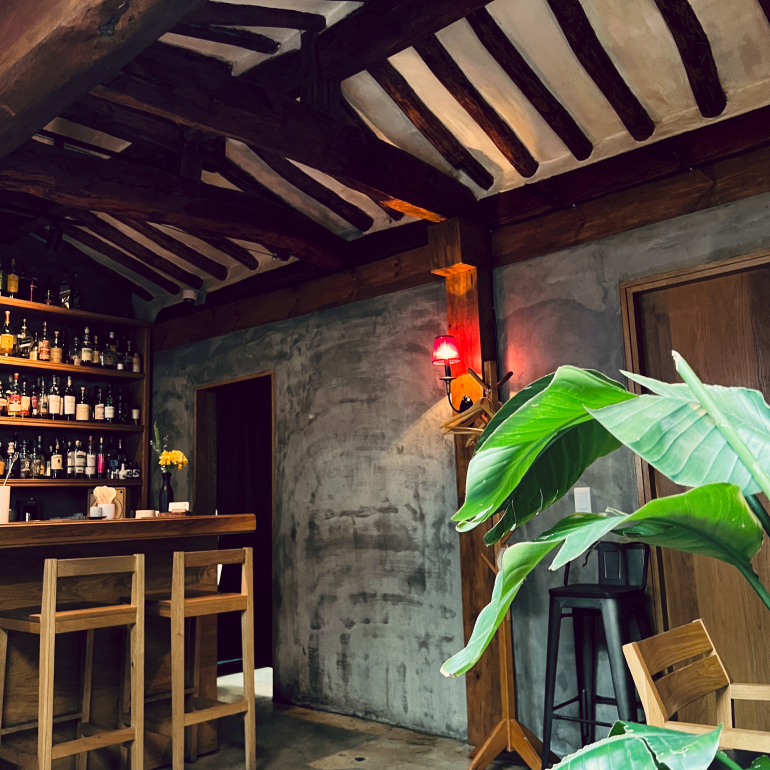
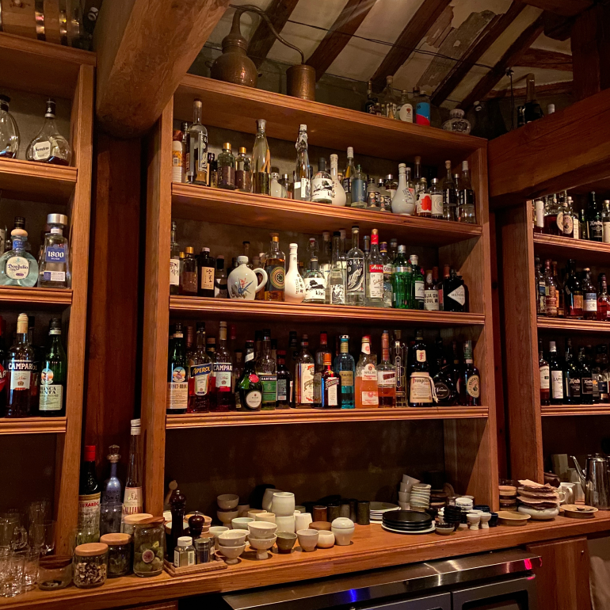
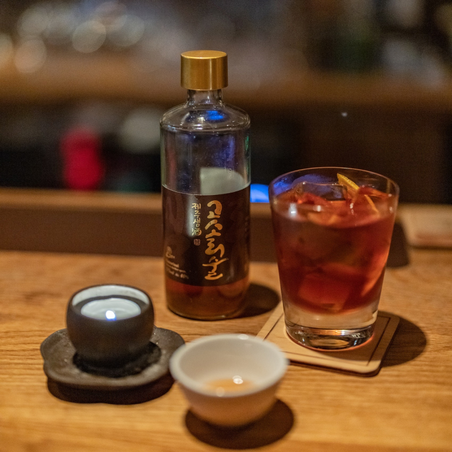
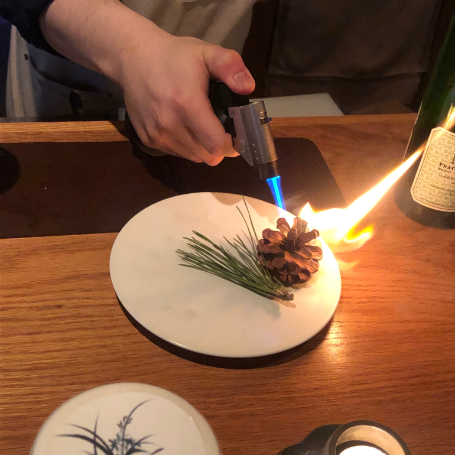
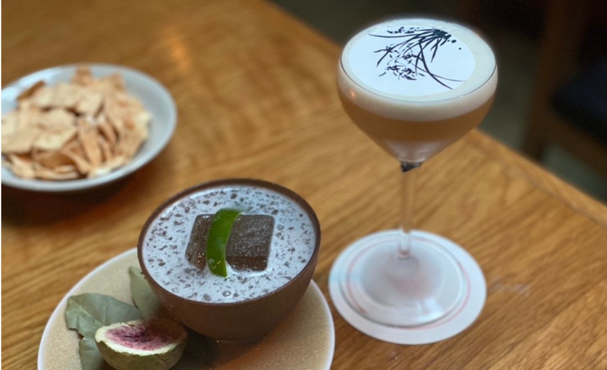

2020年からアジアの50の最高のバーに3年連続選定されたバーが景福宮の隣の西村路地に隠れている。 韓屋の建物がクヌギで飾られ、「バーチャーム」という名前のこの居酒屋は、韓国伝統酒で作ったカクテルが楽しめる魅力的な空間だ。「BAR CHAM」にはソウル、驪州、咸陽、潭陽、済州など地域の酒と特産物をつなぐレシピがその地域の香りをたっぷり含んでいる。 また、今日の気分を聞くメニューがあり、5つの選択肢の中からその日の気に合わせてお酒を注文することができる。
景福宮や博物館はもちろん、あちこちに隠れた食堂やカフェ、文化空間を訪れることができる西村を旅行する際は、お酒一杯で旅立つ韓国八道旅行をここBARCHAMで楽しんでみてはいかがだろうか。

住所 : ソウル特別市鍾路区通仁洞ジャハムンロ7ギル34
最寄りの地下鉄駅 : 景福宮(キョンボックン)駅(徒歩5分)
ホームページ : https://www.instagram.com/bar.cham/?hl=ko
近くの観光地

- キョンボックン
- 住所 : ソウル特別市鍾路区社稷路161
- ホームページ : www.royalpalace.go.kr
- 通仁市場
- 住所 : ソウル特別市鍾路区ジャハムンロ15ギル18
- ホームページ : https://tonginmarket.modoo.at